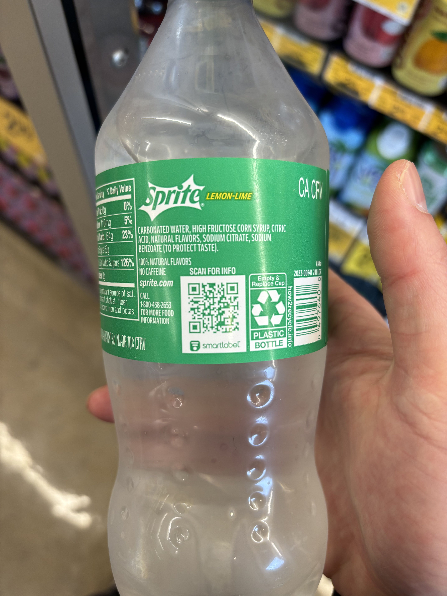
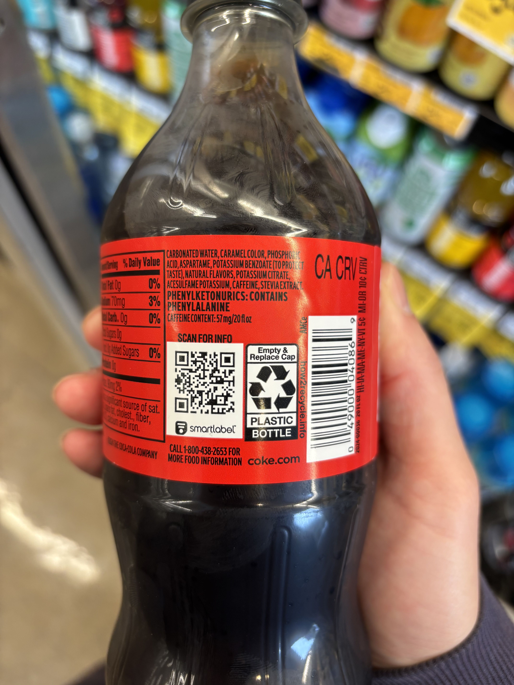
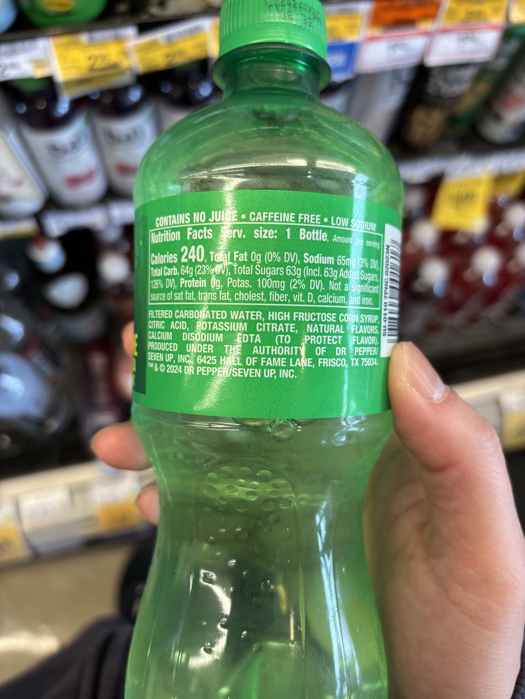
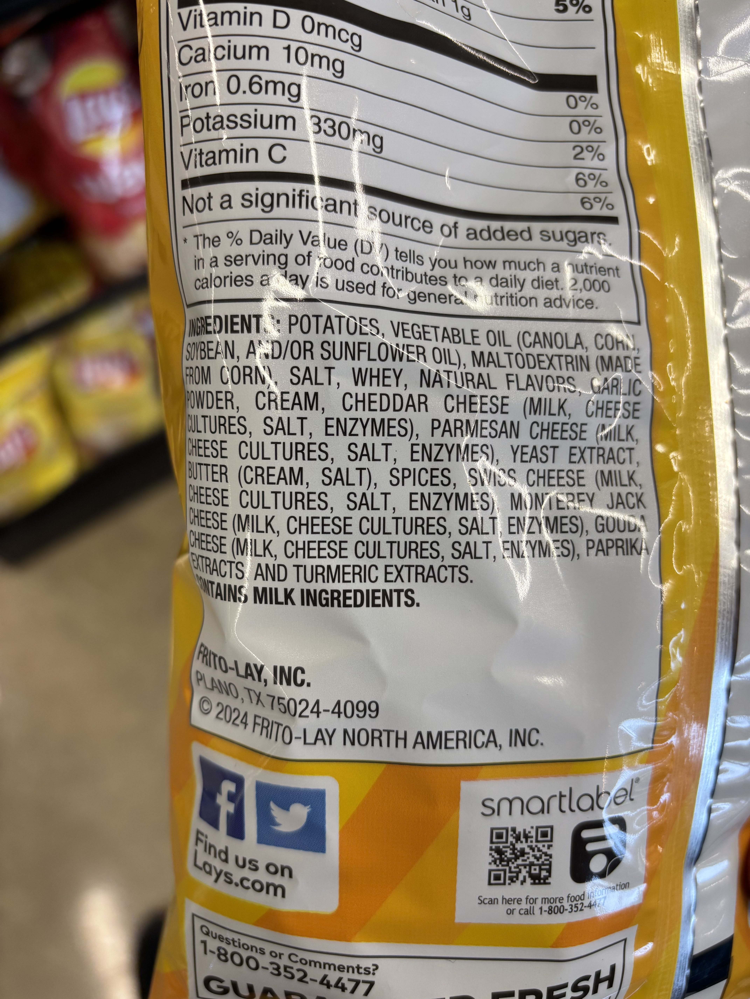
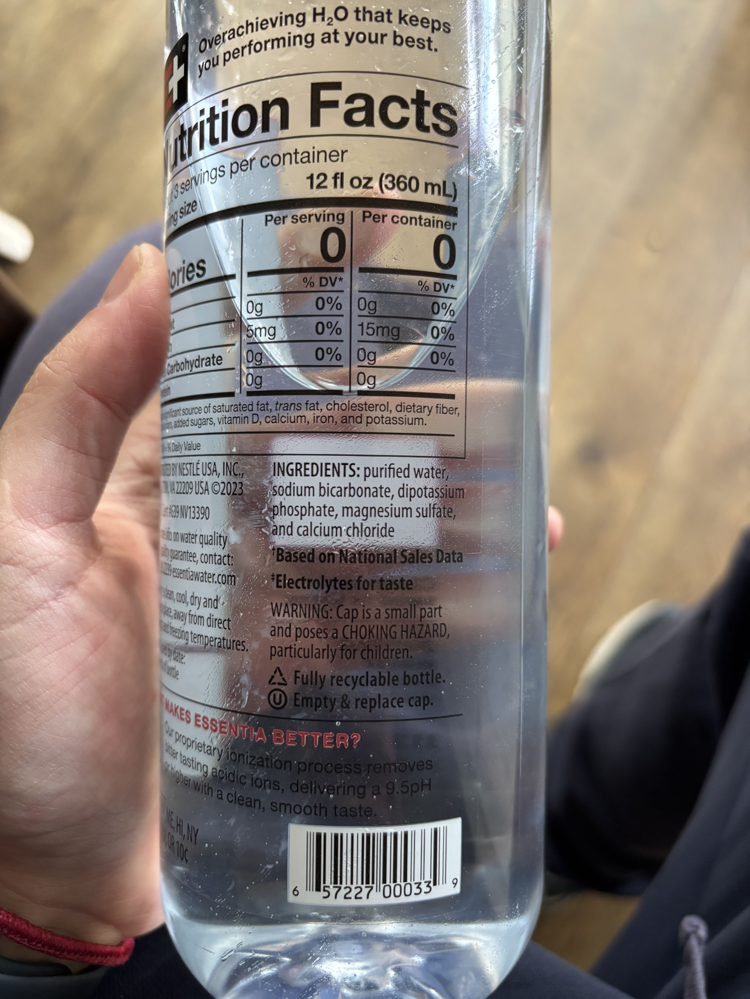

美国几种食品配料表
Table of Contents
1. sprite
Ingredients 成分对照翻译:
- Carbonated water - 碳酸水
- High fructose corn syrup - 高果糖玉米糖浆
- Natural flavors - 天然香料
- Sodium citrate - 柠檬酸钠
- Sodium benzoate (to protect taste) - 苯甲酸钠（用于保护口味）

2. zero coke
Ingredients 成分:
- Carbonated water - 碳酸水
- Caramel color - 焦糖色
- Phosphoric acid - 磷酸
- Aspartame - 阿斯巴甜（代糖）
- Potassium benzoate (to protect taste) - 苯甲酸钾（保护口味）
- Natural flavors - 天然香料
- Potassium citrate - 柠檬酸钾
- Acesulfame potassium - 乙酰磺胺酸钾（安赛蜜，代糖）
- Caffeine - 咖啡因
- Stevia extract - 甜叶菊提取物
其他标注:
- Phenylketonurics: Contains phenylalanine - 苯丙酮尿症患者注意：含苯丙氨酸
- Caffeine content: 57 mg/20 fl oz - 咖啡因含量：57 毫克/20 液盎司

3. 7 Up
Ingredients 成分:
- Filtered carbonated water - 过滤碳酸水
- High fructose corn syrup - 高果糖玉米糖浆
- Citric acid - 柠檬酸
- Potassium citrate - 柠檬酸钾
- Natural flavors - 天然香料
- Calcium disodium EDTA (to protect flavor) - 乙二胺四乙酸钙钠（保护风味）

4. Lays 薯片
Ingredients 成分:
- Potatoes - 马铃薯
- Vegetable oil (canola, corn, soybean, and/or sunflower oil) - 植物油（菜籽油、玉米油、大豆油和/或葵花籽油）
- Maltodextrin (made from corn) - 麦芽糊精（由玉米制成）
- Salt - 盐
- Whey - 乳清
- Natural flavors - 天然香料
- Garlic powder - 大蒜粉
- Cream - 奶油
- Cheddar cheese (milk, cheese cultures, salt, enzymes) - 切达奶酪（牛奶、奶酪培养物、盐、酶）
- Parmesan cheese (milk, cheese cultures, salt, enzymes) - 帕尔马奶酪（牛奶、奶酪培养物、盐、酶）
- Yeast extract - 酵母提取物
- Butter (cream, salt) - 黄油（奶油、盐）
- Spices - 香料
- Swiss cheese (milk, cheese cultures, salt, enzymes) - 瑞士奶酪（牛奶、奶酪培养物、盐、酶）
- Monterey Jack cheese (milk, cheese cultures, salt, enzymes) - 蒙特雷杰克奶酪（牛奶、奶酪培养物、盐、酶）
- Gouda cheese (milk, cheese cultures, salt, enzymes) - 古达奶酪（牛奶、奶酪培养物、盐、酶）
- Paprika extracts - 辣椒提取物
- Turmeric extracts - 姜黄提取物

5. essential water
Ingredients 成分:
- Purified water - 纯净水
- Sodium bicarbonate - 碳酸氢钠
- Dipotassium phosphate - 磷酸二钾
- Magnesium sulfate - 硫酸镁
- Calcium chloride - 氯化钙
其他标注:
- Electrolytes for taste - 为提升口感添加的电解质
- pH level: 9.5+ - pH值为9.5以上
